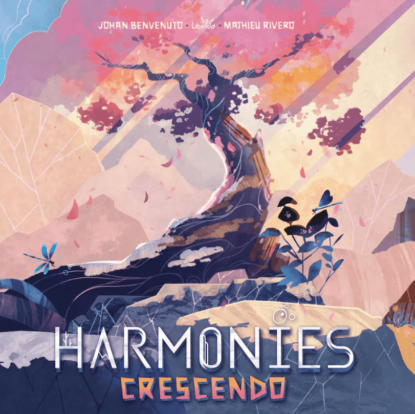

Manchete · Chegando ao Brasil
Asmodee põe preço em Harmonies: Crescendo e Bang! Dice Explosion, ainda sem estoque
A Asmodee incluiu no catálogo do seu site, em 26/10/2026, Harmonies: Crescendo, segunda expansão do vencedor do Golden Geek, por R$ 159,99, e Bang! Dice Explosion, caixa que junta o jogo de dados de Bang! a duas expansões, por R$ 329,99. O Spoiler Board da editora previa as duas para outubro; em 03/11/2026, as páginas apareciam sem estoque.
Para fãs do jogo base Para fãs do jogo base, e com a calculadora na mão. Na nossa resenha, Harmonies era um quebra-cabeça elegante com pouca interação, e Crescendo não muda isso: muda a pontuação. Os tabuleiros novos parecem valer a compra. Os Santuários parecem dever de casa. Espere o preço real nas lojas, que costuma ficar abaixo do sugerido.
Capa via Ludopedia